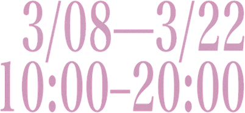
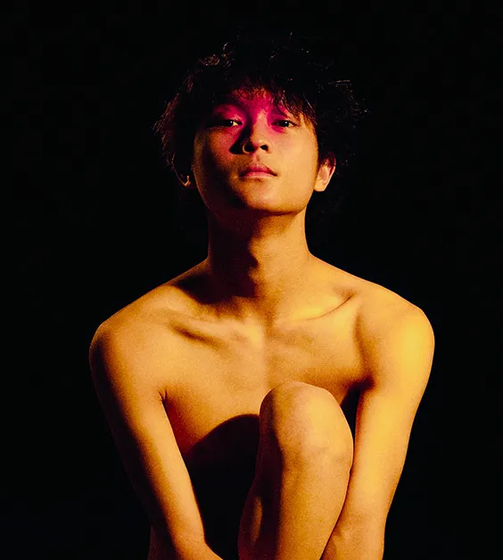
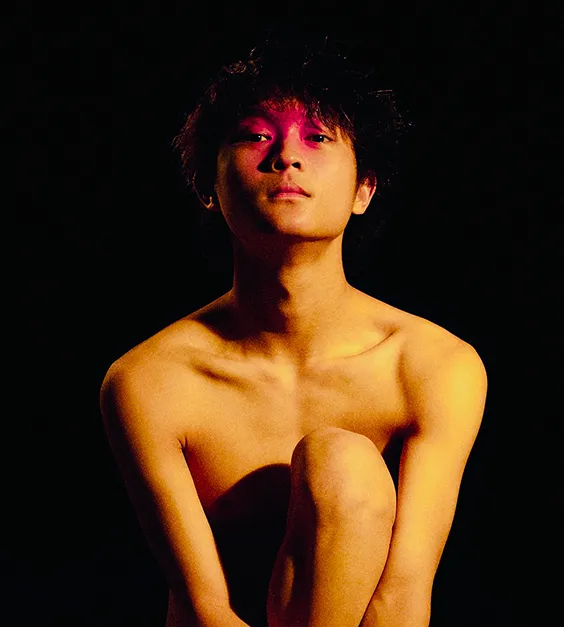

誠空間
台北市民生東路三段 113 巷 7 弄 10 號地下一樓
展覽簡介
《半嬌面》
The Ambivalent Facade
《半嬌面》是藝術家黃聿謙對於青春期混沌本質的一次深層剖析。在此，「嬌」並非單指傳統語境下的性別氣質，而是作為青春期特有心理狀態的代名詞：一種在「柔弱依賴」與「防禦抗拒」之間反覆擺溢，厭惡與喜愛共生的矛盾綜合儇。
展覽的核心概念圍繞著「半」與「面」展開。「半」象徵著一種「一知半解」的中介狀態—個體能夠覺察自身的心理迴路，卻往往無力阻斷這種重複性的陷落。這種在清醒中掙扎、在痛苦中試圖拼湊自我的過程，即是「半」的體現。
「面」則意在削弱「嬌」字帶來的性別刻板印象，將其轉化為一種純粹的生命面向與精神切片。
展出作品横跨了藝術家長達一年的心路歷程，依循著內在成長的軌跡推展。從情感關係中的投射與困惑；到個體在群體中的出格與排他、自負與隨後的自我校正；最終收束於狂想後的沈澱與靜觀。
《半嬌面》不僅是對個人私密情感的揭露，更是一場關於主體建構的演辣。從迷茫的渴愛到站穩自我，展覽試圖在這些未完成的「半」面相中，捕捉那段最為躁動、脆弱，卻也最為真實的蛻愛時光

 

展覽資訊
-
10:00 - 20:00
展覽地點：
誠空間
（
台北市民生東路三段 113 巷 7 弄 10 號地下一樓
）